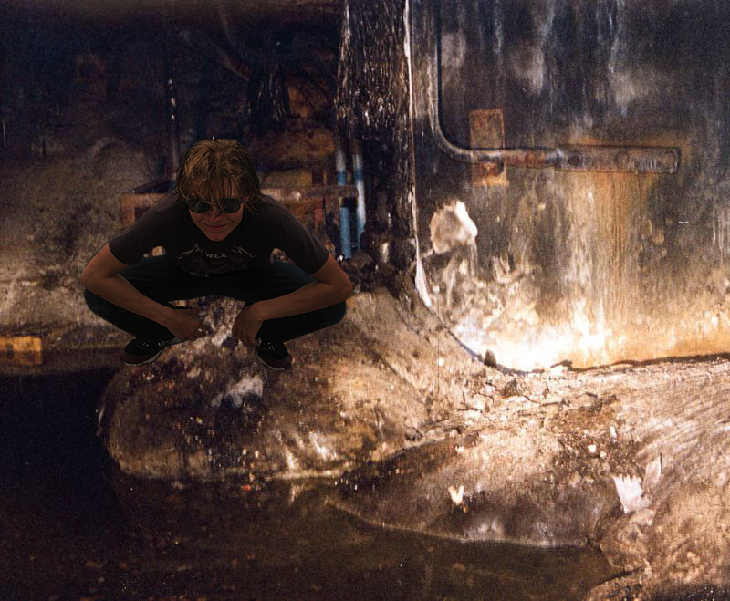

Home
Previous

After what seemed like forever, I finally made it to Chernobyl. My first order of business and my main priority was to get into the destroyed lab and find the reactor core, also known as the elephant's foot. After making my way through the lab basement I came across the elephant's foot and took this picture. Now this may have just been the radiation, but for the first time in a long time I felt true serenity.